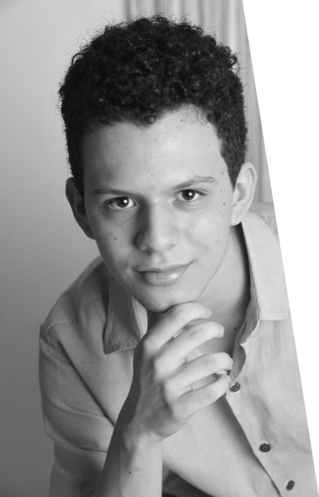

Thomas Gómez Serpa · Física y Matemáticas, Universidad de los Andes

Soy Thomas Gómez Serpa, estudiante de Física y Matemáticas en la Universidad de los Andes. Aquí concentro mi trabajo académico y lo que desarrollo en computación como apoyo a mis estudios. Para conocer mi enfoque y trayectoria, sigue a Sobre mí; los materiales están organizados en Contenidos.
Me importan el rigor y la claridad al exponer, y el intercambio con quienes comparten estas disciplinas. Cuando el tema lo pide, también me gusta acercarlo a quien no es especialista.
Sobre mí

Thomas Gómez Serpa
Mi interés central es la física y las matemáticas: plantear problemas con precisión, argumentar con rigor y utilizar el computador para modelar, simular y comprobar resultados. Como estudiante de la Universidad de los Andes, busco integrar la teoría con la práctica mediante el desarrollo de software y el análisis numérico cuando el curso o el proyecto lo requieren.
Esta página es un repositorio personal abierto a quien le resulte útil; la sección Contenidos agrupa lo que comparto por tipo de material. Las consultas académicas o profesionales pueden hacerse por LinkedIn, en el apartado de contacto al final.
Formación e intereses
- Física y Matemáticas (Universidad de los Andes)
- Desarrollo de software y proyectos complementarios a la formación teórica
- Publicación de apuntes y material de curso cuando aporte a la comunidad
Lectura y texto literario
Espacio ocasional para textos literarios en verso, como complemento al trabajo en física y matemáticas; la lectura acompaña la formación académica.
Contenidos
Apuntes
Notas de clase, resúmenes, deducciones y demás material académico que también puede incluir lecturas o divulgación breve.
Tareas
Ejercicios y entregas de curso compartidos cuando puedan servir como referencia a otros estudiantes.
Código
Fragmentos, repositorios y experimentos de programación, con énfasis en documentación cuando sea posible.
Programas & apps
Herramientas y prototipos de software, desde utilidades de consola hasta interfaces sencillas.
Poemas
Textos breves en verso, en un apartado distinto del material científico y técnico.
Contacto
El canal previsto para consultas académicas o profesionales es LinkedIn. Puede enviarme un mensaje directo desde mi perfil; allí también comparto información sobre formación y proyectos.
Abrir perfil en LinkedIn